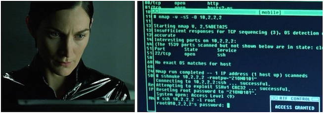

Usually all you need to uncover lots of juicy assets (potential attack targets)
nmap -sn -iL ranges.txt -oA pingsweep
-sn: Ping Scan - disable port scan
-iL <inputfilename>: Input from list of hosts/networks
-oA <basename>: Output in the three major formats at once
Sometimes a system administrator will intentionally configure hosts to ignore ICMP requests making them difficult to discover.
Try this if the Basic Ping Sweep doesn’t yield the results you’re expecting.
The logic behind it is that systems were stood up for a reason and it’s likely the system administrator is too busy to physicaly login
every time maintenance is required.
For this reason it is highly likely they configured some sort of remote management interface. These ports are simply the most common ports used for remote administration.
You can tweak this scan to have more or fewer ports keeping in mind the more ports you’re checking the longer you’ll have to wait on large scopes.
nmap -Pn -n -p 22,445,80,443,3389 -iL ranges.txt -oA rmisweep
What if the client has a Class A /8 network and with 16.7Mil possible IPs and has no idea where everything is? No problem!
The logic here is that hypothetically speaking, each /24 subnet is going to have a gateway on the .1 node.
So isntead of checking for 16 million possible IPs we only need to check for 65 thousand possible gateways.
nmap -sn 10.1-255.1-255.1 --min-rate 10000 --min-hostgroup 1024 -oA subnetsweep
--min-hostgroup/max-hostgroup <size>: Parallel host scan group sizes
--min-rate <number>: Send packets no slower than <number> per second
Here is a quick command to turn the subnetsweep.gnmap file into a new ranges.txt file that you can use for basic or RMI asset discovery.
grep "Up" subnetsweep | cut -d " " -f2 | awk -F "." '{print $1"."$2"."$3".0/24"}' > ranges.txt
The .gnmap file generated by the above sweeps presents an easily “grepable” output you can use to build a list of targets. For simplicity lets call it targets.txt
cat *.gnmap | grep "Up" | cut -d " " -f2 > targets.txt